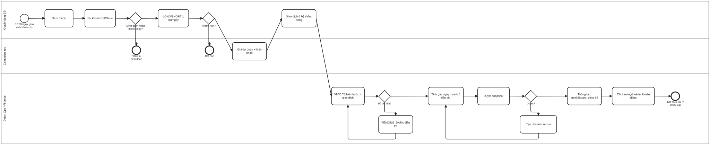
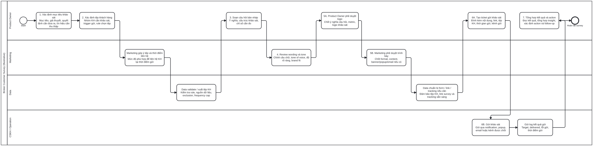
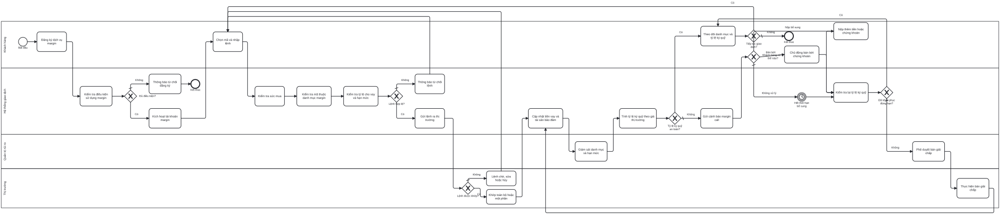
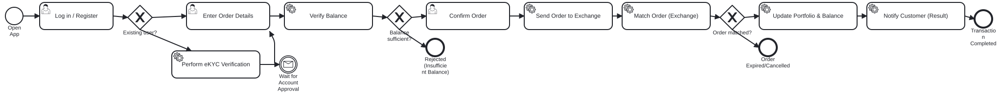

Selected work
Projects you can inspect
Each example shows my contribution and the product thinking behind it. Public demos use sample or browser-local data.
Customer discovery
Survey Hub
for Brokers
for Brokers
A repeatable way to build customer surveys
Discovery · Workflow · Prototype
Make customer feedback easier to collect
Brokers needed a consistent survey process that made objectives, target customers, questions, review, and follow-up clear.
- Mapped the survey journey and reusable question templates.
- Built an interactive form builder with preview and local draft storage.
- Analyzed feedback themes to identify customer needs and engagement bottlenecks.
Product rules
Margin
Simulation
Simulation
Compare borrowing terms in one flow
Business rules · UX · Testing
Turn complex terms into a usable comparison
Margin packages can differ by loan amount, tenor, customer rate, promotion, and eligibility, making comparison difficult.
- Translated product terms into eligibility and calculation rules.
- Built a browser prototype for side-by-side package comparisons.
- Tested daily borrowing cost and effective-rate scenarios.
Validation and reporting
InsightChat UAT
& Product Data
& Product Data
Internal SSI work · public case summary
UAT · Data definitions · Stakeholders
Check behavior, then measure performance
At SSI, I worked with business, Data, and IT teams on product reporting and the validation of an internal AI agent.
- Checked InsightChat business scenarios, response context, and data outputs; documented issues for refinement.
- Defined 20+ metrics across time ranges for a Superset master dataset and weekly product reporting.
- Used SQL and dashboards to review market share, revenue, and outstanding balances for six products/features.
Business analysis
From an unclear need to a testable solution
At SSI, I worked across customer discovery, process mapping, UAT, and product data. The examples below distinguish team work from my independent BA case studies.
01 · DISCOVER & MAP
Understand the real process
Clarify the user, the handoffs, and where the workflow can lose information.
SSI campaign BPMN: contributed the data-flow and reconciliation segment to the team's end-to-end “Nay Long hay Short” process map.
02 · DEFINE & ALIGN
Turn needs into clear rules
Make product conditions and decision points concrete enough for business and technical teams to discuss and implement.
Margin Simulation: translated loan amount, tenor, rate, promotion, and eligibility terms into comparison logic and a clickable prototype.
03 · TEST & IMPROVE
Validate against real scenarios
Check expected behavior, record gaps, and use feedback or data to guide the next iteration.
InsightChat at SSI: tested business scenarios and response context, documented issues, and worked with Data and IT on metric definitions and reporting outputs.
Outputs illustrated hereBPMN process flowsBusiness rulesClickable prototypesUAT findingsData definitions
Featured case · SSI product team
Map data handoffs and measure campaign performance.
For “Nay Long hay Short 2026”, I contributed the data-flow and reconciliation segment to the team's end-to-end BPMN. I also analyzed trading extracts supplied by SSI’s Data team and prepared Excel reports and Superset views by day, week, and cumulative period.
Explore the BA case study ↗Work carried out at SSIBPMN contribution, trading-data analysis, visual reporting, and collaboration on metric definitions.
Independent BA reconstructionBusiness requirements, an illustrative public-facing BPMN, eligibility decisions, exception handling, and UAT scenarios. This is not an official SSI specification.
Process modeling · BPMN
Process maps you can inspect
At SSI, I contributed the data-flow and reconciliation part of the campaign's end-to-end BPMN. The campaign diagram below is a separate, public-facing reconstruction from published rules; the other diagrams are sanitized portfolio examples.

SSI BPMN contribution · Public reconstruction
Long or Short campaign
At SSI I mapped data-flow and reconciliation steps. This separate to-be model shows the complete journey using public rules.
Explore BPMN diagram ↗
4 lanes · Stakeholder handoffs
Broker customer survey
From survey goals and customer selection to approvals, distribution, and insight review.
Explore BPMN diagram ↗
Risk decisions · Exception paths
Margin trading journey
Eligibility, buying power, order handling, monitoring, margin call, and resolution paths.
Explore BPMN diagram ↗
System flow · Validation
Stock buy-order flow
Account checks, order entry, balance validation, exchange matching, and confirmation.
Explore BPMN diagram ↗Product approach
Evidence before adjectives
01 · UNDERSTAND
Start with the real workflow
Clarify who uses the product, what decision they need to make, and where the existing process breaks down.
02 · MAKE IT TESTABLE
Write flows and rules clearly
Translate needs into user flows, business rules, prototypes, and tracked tasks that Business and IT can discuss together.
03 · LEARN FROM USE
Validate and improve
Test realistic scenarios, log issues, examine customer feedback and performance data, and refine the solution.
About me
Finance background, product mindset
I am a Finance and Banking graduate of the National Economics University. My experience spans product and data analysis at SSI, corporate customer operations at BIDV, and securities research at VPBank Securities.
I am interested in Product Owner and Business Analyst roles where I can connect user needs, implementation details, and measurable product outcomes.
Core skillsRequirement analysis, process mapping, business rules, backlog tracking, UAT, customer research
ToolsSQL, Superset, Power BI, Excel, Microsoft Planner, Power Automate, HTML/CSS/JavaScript
LocationHanoi, Vietnam